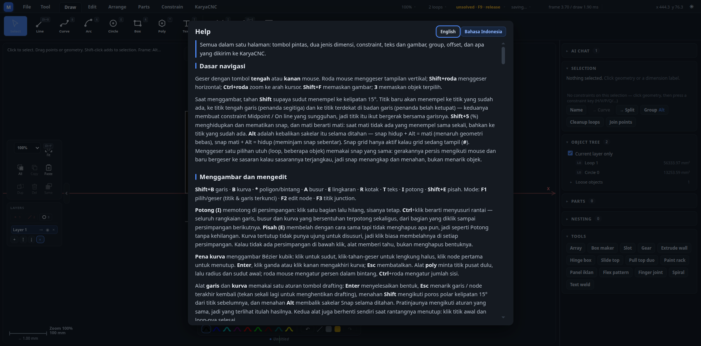

Beranda › Pintasan Keyboard Lengkap
Pintasan Keyboard
Referensi cepat semua tombol pintas di MiniSketch. Di aplikasi, tekan ? untuk membuka jendela Help bawaan (bilingual: English / Indonesia) seperti di bawah ini.

Jendela Help bawaan (?): bilingual (English / Bahasa Indonesia), berisi dasar navigasi, menggambar & mengedit, daftar tombol, dimensi, constraint, solving, teks, import, dan lainnya.
Berkas
| Pintasan | Fungsi |
|---|
| Ctrl+O | Open — membuka file .sketch / .json (mengganti seluruh sketsa). |
| Ctrl+I | Import — menggabungkan file ke sketsa aktif. |
| Ctrl+S | Simpan / unduh berkas .sketch ke disk (nama terakhir). |
| Ctrl+Shift+S | Save as — selalu menanyakan nama baru, unduh .sketch. |
| Ctrl+E | Ekspor SVG. |
Alat (Draw)
| Pintasan | Alat |
|---|
| Shift+B | Garis (Line) |
| B | Kurva Bézier (Curve) |
| * | Poligon / Bintang (Poly) |
| A | Busur (Arc) |
| E | Lingkaran (Circle) |
| R | Kotak (Box) |
| T | Teks (Text) |
| I | Potong (Trim) |
| Shift+E | Pisah (Separate) |
| Ctrl+M | Transformasi (Transform) |
| W | Drag wall (di tab Arrange) |
Edit
| Pintasan | Fungsi |
|---|
| Panah kiri/kanan/atas/bawah | Geser pilihan 1 mm (atur di Settings ▸ Geometry ▸ Arrow key nudge). |
| ; | Komentar (note). |
| Ctrl+A | Pilih semua. |
| Ctrl+C | Salin (sketsa + SVG + PNG ke clipboard sistem). |
| Ctrl+Shift+C | Sama dengan Ctrl+C. |
| Ctrl+D | Duplikat di tempat. |
| Ctrl+L | Buat Live clone yang otomatis mengikuti perubahan objek induk. |
| Ctrl+Shift+L | Clone as nest parts — buat live clone sekaligus menandai sumber untuk nesting. |
| Ctrl+K | Fit curve melalui polyline (dialog Tolerance + Sharp corner). |
| Ctrl+V | Tempel. |
| Del | Hapus pilihan. |
| Z | Bersihkan seleksi ke loop utuh; tanpa seleksi, pilih titik sisa / constraint rusak / objek ukuran nol. |
| Shift+L | Cleanup loops — rapikan titik duplikat dan segmen bertumpuk. |
| Alt+W | Weld — las titik sudut/berimpit di dalam seleksi. |
| Ctrl+Z | Batalkan (undo). |
| Ctrl+Shift+Z | Ulangi (redo). |
| Ctrl+N | Beri nama seleksi. |
| Ctrl+G | Bungkus pilihan menjadi satu objek (group). |
| Ctrl+U | Bongkar group (ungroup). |
| Ctrl+J | Offset. |
| Ctrl+M | Transformasi. |
| Ctrl+Shift+M | Geser: klik titik referensi, lalu tujuan, konfirmasi dx, dy. |
| Ctrl++ | Boolean union loop terpilih. |
| Ctrl+- | Boolean cut (target dulu, lalu alat terakhir). Tahan Shift pada Union/Cut/Intersect = simpan loop asli. |
| Ctrl+0 | Boolean intersect. |
| J | Sambung titik yang bersentuh. |
| F | Fillet pada sudut. |
Constraint & Dimensi
| Pintasan | Constraint / Dimensi |
|---|
| D | Dimensi penggerak (driving dimension). |
| Shift+D | Measure / referensi (hanya mengukur, tidak menggerakkan). |
| G | Tangent / menyentuh. |
| O | Coincident / berimpit. |
| H / V | Horizontal / Vertikal. |
| P | Parallel / sejajar. |
| [ | Perpendicular / tegak lurus. |
| Q | Equal / sama panjang. |
| . | Anchor / jangkar. |
| M | Midpoint / titik tengah. |
| F | Fillet. |
| J | Join points / sambung titik. |
| Alt+T | Mate part (perakitan). |
| Shift+D | Measure / referensi (tanpa seleksi: buat dimensi ukur; saat dimensi terpilih: toggle penggerak ↔ referensi). |
| Enter | Edit dimensi. |
Tampilan & Mesin
| Pintasan | Fungsi |
|---|
| Wheel mouse | Geser tampilan vertikal. |
| Ctrl+Wheel | Zoom. |
| Shift+Wheel | Geser tampilan horizontal. |
| Drag tengah / kanan mouse | Pan (geser kanvas). |
| Shift+F | Pas kanvas ke layar (fit drawing). |
| 3 | Pas ke seleksi (fit selection). |
| # | Grid on/off. |
| Shift+5 (%) | Snap on/off. |
| Alt+1 / Alt+2 / Alt+3 | Toggle Pick Filter: Points / Lines / Loops. |
| L | Loop fill on/off (sementara). |
| F1 / F2 / F3 | Pilih / geser · Edit node · Junction. |
| Alt+D | Auto dimension on/off. |
| \ (backslash) | Titik lancip / halus (sharp / smooth). |
| N | Pilih yang tersambung (select connected). |
| Esc | Batal. |
| F9 | Solve sekarang. |
| Alt+Q | Kirim ke KaryaCNC. |
| Alt+C | Buka dialog Estimasi Biaya Cutting. |
| ? | Jendela Help bawaan aplikasi. |
Saat menggambar: tahan Shift untuk sudut kelipatan 15°, tahan Alt untuk membalik Snap sementara, Shift+5 untuk nyalakan/matikan snap sepenuhnya.